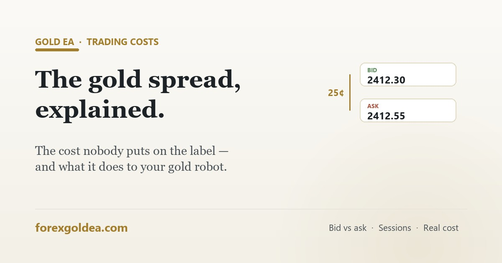

The gold spread, explained: what XAUUSD really costs

No broker statement has a line called "spread" — yet for an active gold robot it's usually the biggest running cost of all. Here's what the spread is, when it turns vicious, and how it quietly separates a profitable backtest from a losing live account.
Bid, ask, and the cost you never see billed
Every quote has two prices. The bid is what buyers will pay you right now — your sells and long-exits fill there. The ask is what sellers charge — your buys fill there. The gap between them is the spread:
Open a buy and you're instantly down 25 cents per oz — the position filled at the ask but could only close at the bid. Nothing appears on any statement; the cost is baked into the fill prices. That invisibility is exactly why traders under-count it, and why two identical robots on different accounts can produce different results. (To convert spread into money for your lot size, use our free gold pip calculator.)
Why gold costs more to trade than EURUSD
- Volatility: gold covers dollars in minutes when active; whoever quotes both sides of that risk charges for it.
- Split liquidity: COMEX futures, spot OTC and ETFs share the flow — deep, but not concentrated like a single major pair.
- Session dependence: genuine depth exists mainly in London and New York hours — the pattern we mapped in gold trading sessions.
Typical honest numbers: 10–35 cents on raw/low-spread accounts (plus commission), 30–50 cents on standard accounts. "From 0.0" advertising refers to rare best-case moments, not your average fill.
What it adds up to
| Spread | Per trade at 0.10 lot | 4 trades/day, weekly | Yearly (~250 days) |
|---|---|---|---|
| 20 cents | $2.00 | $40 | ~$2,000 |
| 35 cents | $3.50 | $70 | ~$3,500 |
| 50 cents | $5.00 | $100 | ~$5,000 |
Win or lose, this toll is paid on every position. It's also why a backtest run at an optimistic fixed spread can show profits that evaporate live on a wider account — the strategy didn't change, the cost did. Always backtest with realistic spreads.
When the spread turns vicious
| Window | What happens |
|---|---|
| Rollover (~21:00–23:00 GMT) | Daily liquidity reset — spreads can jump 3–10× for a stretch, every day |
| Asian session | Thin books, persistently wider quotes |
| Sunday open | Weekend gaps plus thin liquidity |
| News seconds (NFP, CPI, FOMC) | Cents become dollars for a few minutes — the blowouts described in trading gold during news |
How ForexGoldEA keeps spread a small cost
- Meaningful profit targets — a rule-based strategy aiming for larger moves keeps the spread a single-digit percentage of each target, unlike scalpers whose whole edge the spread can consume.
- Liquid-hours trading — positions are opened when the market is deepest and spreads tightest.
- News filter — the EA stands aside around scheduled releases when execution costs explode.
- Fixed stop-loss per trade — losses stay bounded even when quotes get jumpy.
Your side of the deal: run it on a low-spread account, and check the real average spread your broker delivers on demo before going live — the demo-to-live checklist covers this step by step.
Reader questions
What is the spread in gold trading?
The gap between bid (sell) and ask (buy) — e.g. 2412.30 / 2412.55 = 25 cents. Every trade starts down by this amount.
Why is gold's spread wider than forex pairs?
More volatility and fragmented liquidity — quoting gold's risk costs more than quoting EURUSD's.
How much does it cost per trade?
At 0.10 lots, roughly $2.00–$5.00 per trade depending on your account's spread. Multiply by trade frequency and it becomes the biggest running cost of an active EA.
When does the spread widen most?
Rollover hours, the Asian session, Sunday open, and the seconds around NFP/CPI/FOMC — when cents become dollars.
Can spread widening trigger my stop-loss?
Yes — long stops fill at the bid, and a blowout drops the bid without a real price move. Tight stops die to spread alone during news.
How do I pay less?
Raw/low-spread account, trade the London–NY overlap, skip rollover and news windows, and measure your broker's real average on demo.
Where this leaves you
The spread is gold trading's silent partner — it takes its cut of every single trade and never sends an invoice. Know what your account really charges on XAUUSD, keep the robot trading liquid hours away from news, and make sure the strategy's targets dwarf the toll. Handled that way, spread is just a business cost. Ignored, it's the answer to "why does my profitable EA lose money live?"
Affiliate disclosure: we earn a commission when you open and fund an account through our partner links, at no extra cost to you.